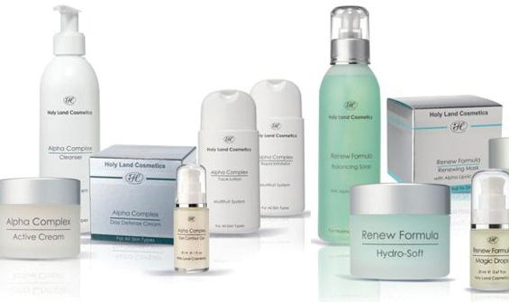

Швидкий ефект: Good-bye Blackhead Ciracle
Про них не можуть мовчати ні блогери, ні б'юті-маніяки: гугл видає сотні відгуків на ці чудо-серветки. Впевнено можемо стверджувати: «Гуд бай блекхед» допоможуть вам забути про походи до косметолога на ультразвукову чистку. Вони справді дуже круті ‒ перевірено редакцією!
Тонкі серветки (є варіант у баночці та в пакетику для одноразової процедури) просякнуті спеціальною есенцією, яка відкриває пори та підіймає сальні пробки над поверхнею шкіри, щоб ви легко змогли їх витягти. Головне, дотримуйтесь наступного протоколу:
- Прийміть теплий душ або ванну, аби пори розкрилися. Ретельно вмийте обличчя.
- Розподіліть серветки на шкірі (щільно притискаючи, не допускаючи утворення бульбашок) та покрийте їх харчовою плівкою.
- Через 15 хвилин починайте поступово відкривати зони обробки, не допускаючи висихання шкіри. Для видалення сальних пробок скористайтеся ложкою уно або петлею.
- Після чищення обличчя вмийтеся та нанесіть антибактеріальну маску для закриття пор.
Пам'ятайте: це хоч і домашнє, але цілком серйозне чищення. Тому кілька днів після процедури протирайте шкіру антибактеріальними засобами, ретельно очищайте її та наносьте заспокійливий догляд.
Для лінивих: D'Alba Daily Mild Clean And Peeling Pad
Якщо ви не хочете морочитися й боїтеся косметологічних ложок – вибирайте пілінг-пади. Принцип їхньої дії простий: подушечки просякнуті рідиною з незначною кількістю кислот. День за днем вони м'яко відлущуватимуть все зайве, запобігатимуть утворенню чорних цяток і вирівнюватимуть колір обличчя.
ефект тонізації;
Чому ми рекомендуємо Daily Mild Clean And Peeling Pad від D'Alba?
- у їхньому складі ВНА/РНА кислоти, п'ять різновидів гіалуронової кислоти, фітоекстракти;
- у баночці – 50 дисків: майже на 2 місяці щоденного очищення;
- після пада не потрібно вмиватися: просто протріть обличчя спочатку рифленою стороною диска, потім гладенькою, та закріпіть результат улюбленим кремом;
- не потрібно наносити тонер або тонік – пади вже мають ефект тонізації;